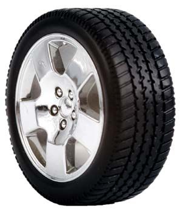
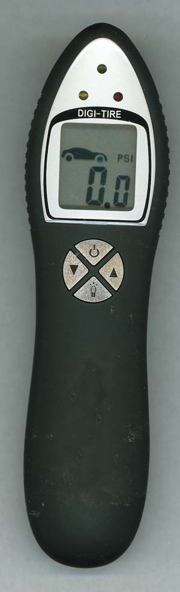

Most of us don’t get excited about tire pressure, or the gauges used to measure it. Yet according to the U.S. Department of Energy, under-inflated tires are responsible for nearly 3.3 million gallons of wasted gasoline each and every day. Add in the benefits of safety and tread longevity from maintaining proper tire pressure, and these practical gizmos start looking downright cool.
However, not all tire pressure gauges are created equal. The worn-out public gauge at the gas station is free to use, but don’t bet on it giving an accurate reading. Then there’s the kind your father used: the sliding-stick “pencil-style” pressure gauge that only costs a few bucks at your local auto parts store. Unfortunately, several experts say the latter lack sufficient accuracy and get increasingly worse over time. Analog dial gauges are more accurate, but can be cumbersome and sensitive to rugged use. Digital gauges, on the other hand, are accurate, easy to use, pay for themselves in a short period of time and, best of all, will help you keep your car safe and improve its fuel economy.
According to experts, tires naturally lose about 1 to 2 pounds of pressure, measured in pounds per square inch (psi), every month. Each pound below the recommended psi lowers your mpg by about 0.4 percent. Low tire pressure affects fuel economy by increasing the tires’ rolling resistance, which makes the engine work harder to move the car.
Ask yourself how long ago you last checked your tires, and don’t fib. Three months? Six months? Longer? With today’s high gas prices, that inefficiency can add up to significant money. At $3 a gallon for gas, a 25 mpg vehicle with neglected tire pressure will require an extra $60 of gas each year compared to a car with properly maintained tires. At those prices, it’s easy to justify the purchase of a quality digital gauge. Keep one in your car and aim to check your tires with every other fill-up, or at least once a month. You’ll find the correct pressure for your tires on a sticker that’s usually located around the driver’s doorframe; if it’s not there, check the glove box or owner’s manual. (Don’t use the psi number on the sidewall of your tires, that’s the “maximum permissible” pressure for those tires.) Finally, because “cold” tires are used to define proper pressure levels, check it before your trip or before driving more than a mile.
Most digital gauges cost between $10 and $40, depending on the specific model’s bells and whistles. Some of those features are handy, such as backlit screens, LED flashlights and programmable memories that retain your car’s recommended front and rear tire pressures.
|
 ISTOCKPHOTO/MAREK TIHELKA Check your tire pressure when your tires are cold, or after less than a mile of driving. Aim to check your pressure once a month and you’ll stay on top of fluctuations than would otherwise lower your gas mileage. |
 MATTHEW T. STALLBAUMER Digital tire pressure gauges are much more accurate and reliable than old-school, pencil-style gauges. |
|